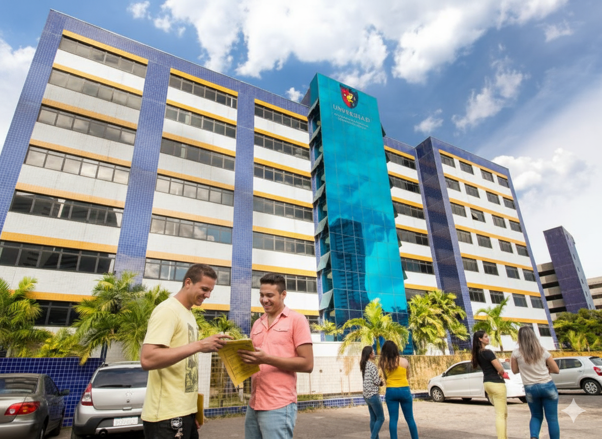

Systems Analysis and Development at UNINASSAU College
I am currently studying Systems Analysis and Development at UNINASSAU, where I am building my knowledge of programming, web development, and databases. I have been focusing on front-end development by creating interactive, intuitive interfaces, while also studying back-end development to understand how applications work behind the scenes. My goal is to apply what I learn to build polished, functional websites that bring creativity and programming logic together.